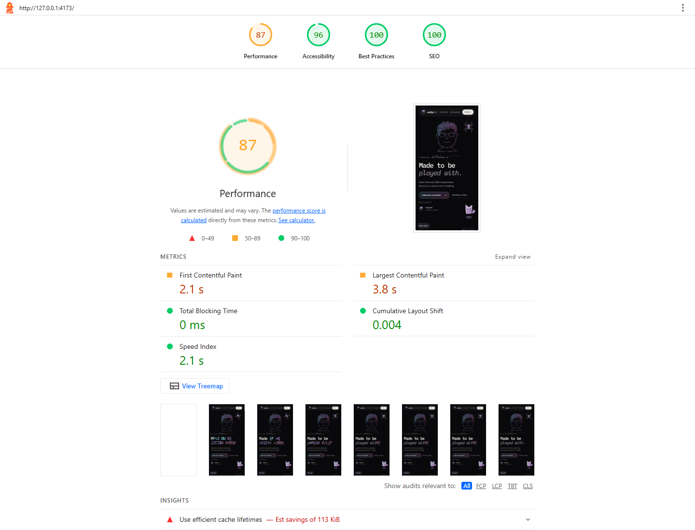
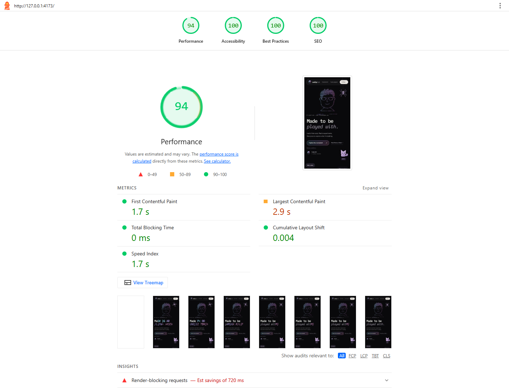
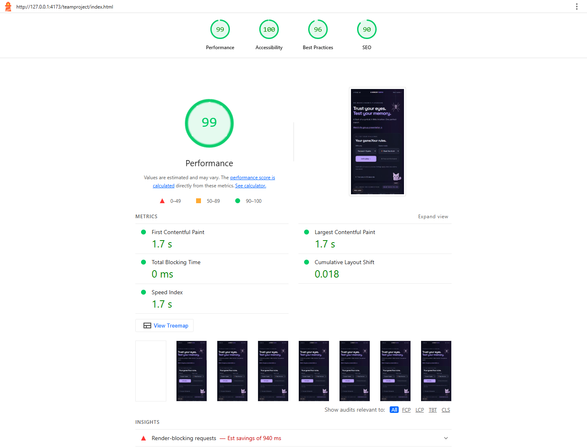
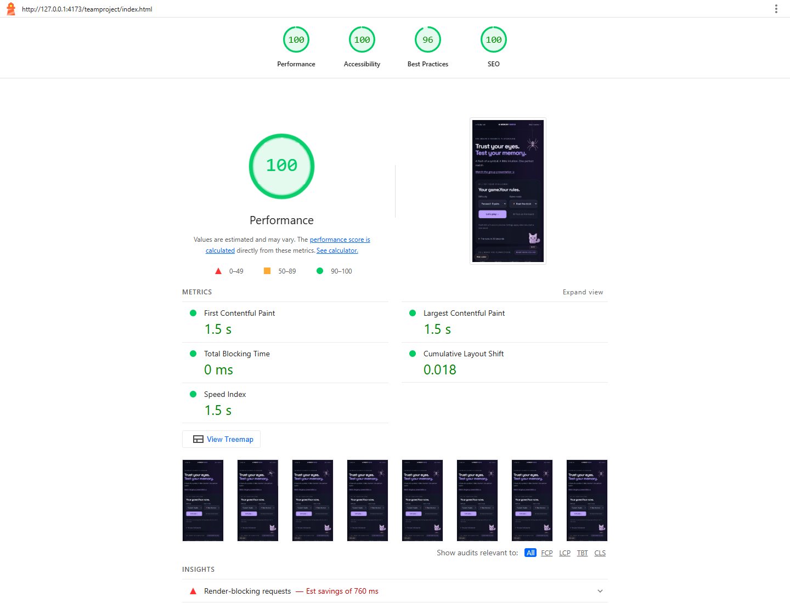

WEB PROGRAMMING / SUDIP SAH / 2 NOVEMBER 2026
Week 9.2 · Performance optimization
Practice exercises and completed lab
Three working performance exercises and all seven stages of the movie-site lab.
- E1 · Run Lighthouse and read the results — original, optimized page, measured findings and reports.
- E2 · WebP, JPEG fallback and responsive images — real local assets, file sizes and browser-selected source.
- E3 · defer and async — external scripts, DOM-ready proof and execution timeline.
- Seven-step accessibility and performance lab — untouched starter, completed stages, solution and audit evidence.
Two-sentence homework summary
I optimized font discovery and connections, bundled and minified CSS and JavaScript, and scheduled decorative companions after page load; the personal homepage Lighthouse Performance score changed from 87 to 94. I also disabled unnecessary video preloading on Memory Match, whose score changed from 99 to 100, and documented the changes with before-and-after mobile Lighthouse evidence.
Evidence uses Lighthouse mobile emulation on a local copy at 127.0.0.1:4173, before and after changes, with the same simulated network and CPU settings. These are single-run lab scores; published-site and real-user performance can differ. The team site already exceeded the required 80 before optimization.
Personal site: 87 → 94


Memory Match team project: 99 → 100


Six changes made
- Replaced nested font CSS imports with direct stylesheet discovery in HTML.
- Added preconnect hints for Google Fonts stylesheet and font origins.
- Combined and minified the homepage styles, and minified game CSS.
- Bundled and minified homepage/game JavaScript while preserving module deferral.
- Changed the off-screen presentation video from
preload="metadata"topreload="none". - Loaded decorative companions after the window load event using an idle callback and fallback.
Also corrected homepage caption contrast and added a game meta description. Full code snippets and validation are in the PDF.
Reflection
Font discovery and bundling addressed the homepage's render-blocking request chains. For Memory Match, on-demand video loading produced the clearest bandwidth reduction without removing the presentation; the combined audit does not establish the individual effect of each change.